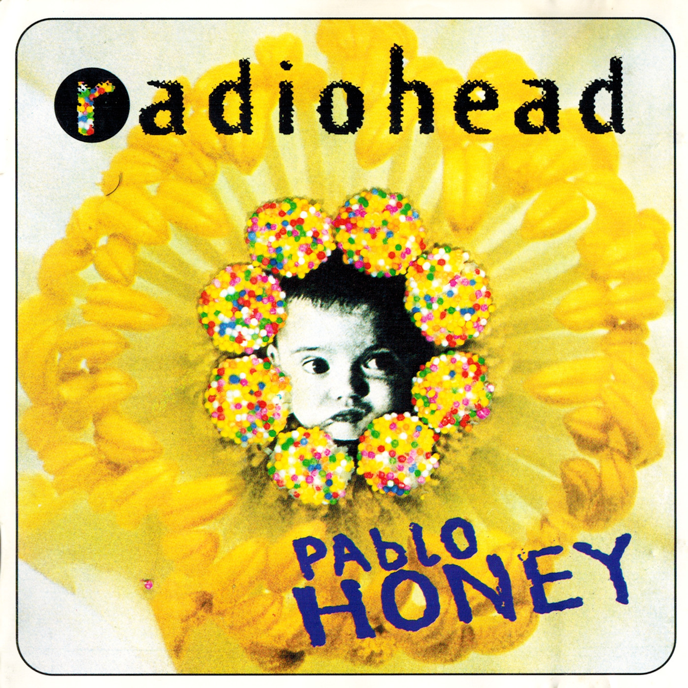
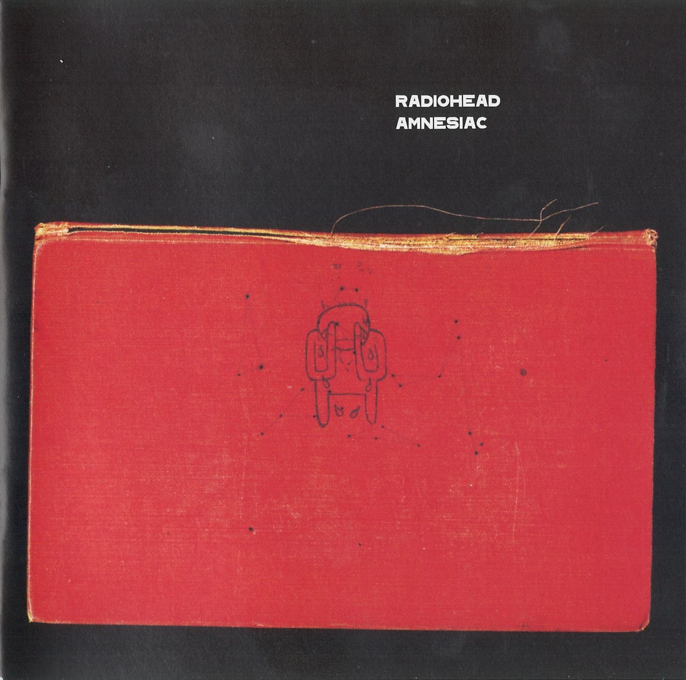
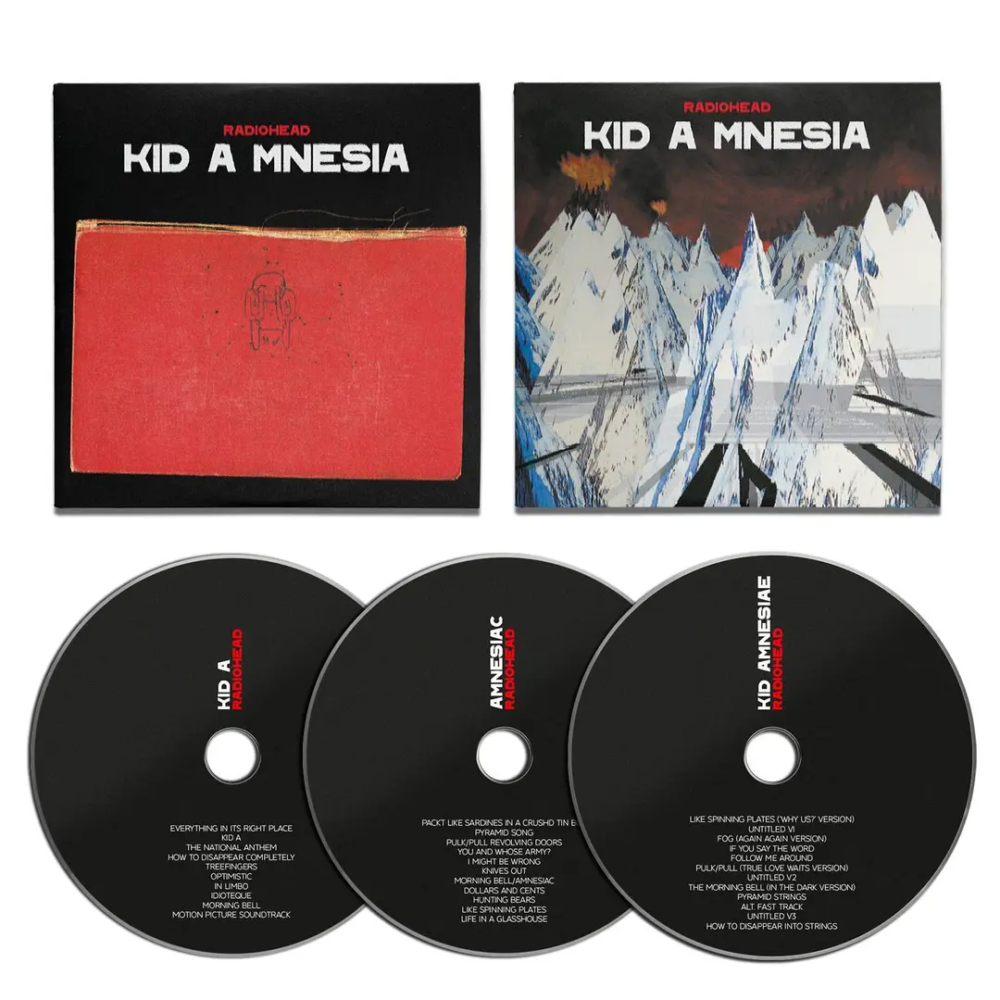

Álbuns

Pablo Honey (1993): O álbum de estreia do Radiohead, "Pablo Honey", é conhecido principalmente pelo sucesso "Creep". O som é mais voltado para o grunge e rock alternativo, refletindo as influências da banda na época. Apesar de ter recebido críticas mistas, "Creep" se tornou um hino da década de 1990.

The Bends (1995): "The Bends" marca uma mudança significativa para um som mais complexo e maduro. O álbum apresenta uma mistura de músicas mais melódicas e introspectivas, incluindo faixas como "Fake Plastic Trees", "High and Dry" e "Just". Este álbum solidificou a reputação do Radiohead como uma das bandas mais importantes da década.

OK Computer (1997): Considerado um marco na música alternativa, "OK Computer" é um álbum conceitual que aborda temas como alienação, tecnologia e a sociedade moderna. A experimentação sonora é evidente em faixas como "Paranoid Android" e "Karma Police". Este álbum é frequentemente elogiado por sua inovação e visão futurista.

Kid A (2000): Uma mudança radical de direção, "Kid A" é um álbum experimental e eletrônico. Marcado por sintetizadores e arranjos complexos, o álbum não segue estruturas tradicionais de rock. Faixas como "Everything in Its Right Place" e "Idioteque" representam a abordagem vanguardista da banda.

Amnesiac (2001): Lançado logo após "Kid A", "Amnesiac" compartilha algumas das experimentações eletrônicas de seu antecessor. No entanto, o álbum tem sua própria identidade, com faixas como "Pyramid Song" e "Knives Out" exibindo uma variedade de estilos e texturas sonoras únicas.

Hail-to to the Thief (2003): "Hail-to to the Thief" marca um retorno a uma abordagem mais acessível, combinando elementos eletrônicos com um som mais tradicional de rock. As letras abordam questões políticas e sociais, refletindo o clima da época. Faixas notáveis incluem"There, There" e "2 + 2 = 5".

In Rainbows (2007):
Além de ser notável pelo seu modelo de pagamento inovador,
"In Rainbows" é celebrado por sua musicalidade excepcional. Este álbum incorpora
uma ampla gama de estilos, desde o indie rock até elementos eletrônicos. Músicas
como "Nude" e "Weird Fishes/Arpeggi" destacam-se pela complexidade e beleza.

The King of Limbs (2011): "The King of Limbs" é caracterizado por ritmos intricados e uma abordagem mais minimalista. A banda explora texturas sonoras únicas e incorpora elementos de música eletrônica. Faixas como "Lotus Flower" e "Codex" refletem a experimentação contínua da banda.

A Moon Shaped Pool (2016): Este álbum é conhecido por sua beleza melancólica e orquestração cuidadosa. Incorpora elementos de cordas e pianos, criando uma atmosfera emotiva e introspectiva. Músicas como "Burn the Witch" e "Daydreaming" destacam-se pela sua profundidade lírica e musical.
Produtos
Clique no produto para acessar a loja

Kid Vinil CD Triplo
Três discos contendo KID A e Amnesiac, junto com KID AMNESIA. 12 faixas de sessões e materiais inéditos, tudo incluído em um pacote de arte dobrável.

2X CD OK Computer OK Not OK
Dois CDs contendo 23 faixas de OK Computer, 3 faixas inéditas e 8 lados B, todos remasterizados.